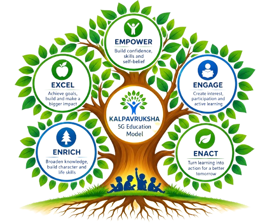

Kalpavruksha 5G Education Model
Kalpavruksha should be positioned as the central intellectual and operational framework of STG. The tree metaphor communicates progression: a strong foundation enables aspiration; aspiration enables talent development; development enables ownership and growth; and mature individuals contribute to wider social impact.

1. Empower — Seed
Identify & nurture potential
Identify potential and provide the right support to nurture it.
- Aptitude & interest discovery assessments
- Early mentoring and personalised guidance
- Scholarships and access to learning resources
2. Engage — Root
Foundation & connection to learning
Build strong connections, create a supportive environment and spark curiosity.
- Strong foundations in academics and life skills
- Safe, caring and value-based learning spaces
- Peer groups, mentors and family engagement
3. Enact — Branch
Convert learning into action
Turn learning into action through hands-on experience, projects and real-world exposure.
- Hands-on projects, labs and workshops
- Exposure visits, internships and field learning
- Teamwork, problem-solving and innovation challenges
4. Enrich — Tree
Build confidence & skills
Broaden knowledge, build skills, and create holistic development.
- Career exploration and stream selection guidance
- Digital, communication and leadership skills
- Health, well-being and climate awareness
5. Excel — Fruit
Achieve leadership & meaningful outcomes
Achieve goals, create impact and shape a brighter future.
- Higher education and career readiness support
- Leadership roles and community contribution
- Alumni mentoring to replicate the journey